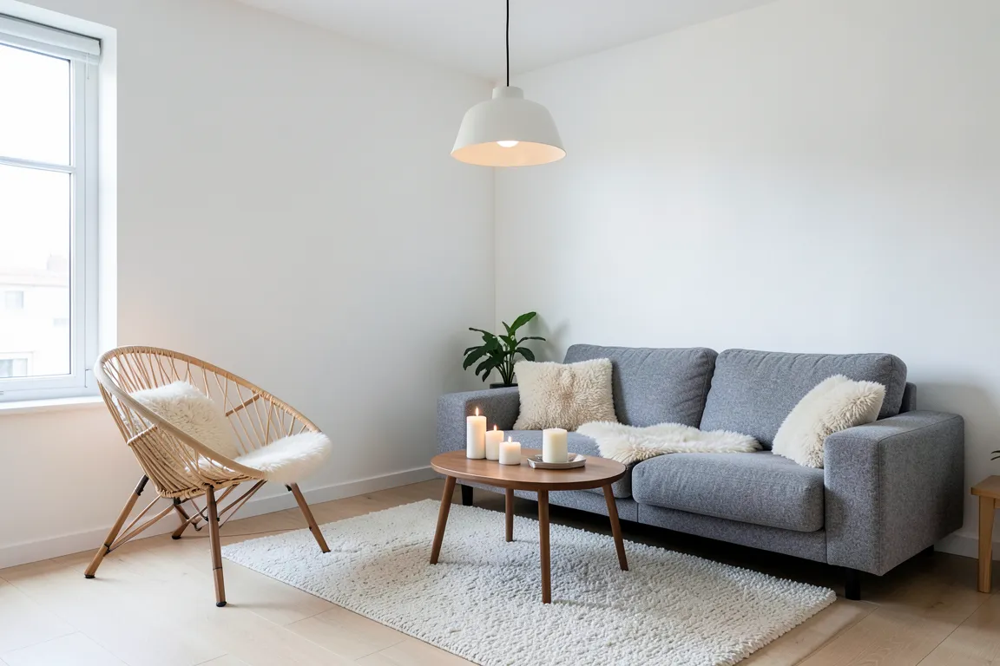

interior · 1950s–present · also: Scandi, Nordic interior, Scandinavian Modern
The bright, light-wood room of Denmark, Sweden, Norway and Finland. White walls and pale floors catch the short northern daylight; solid-wood furniture with visible joints and wool textiles stand in small groups, and many small lamps replace one ceiling light.

Core thesis
A home for a long dark winter must be bright, warm in material and made of few good things that last.
Design principles
Paint walls and ceiling white or pale grey at a light reflectance value of 80 or more, and lay a pale wood floor.
Use one light wood species, oak, ash or birch, for floor and furniture, oiled or soaped to a matt finish.
Light each room with 3–5 small sources at different heights, not one ceiling light: a pendant, a floor lamp, a table lamp and candles.
Keep window sills and the top 30 cm of the window free of curtains, so that the most daylight enters.
Group a sofa and two chairs around a round or oval table on one wool rug.
Add warmth with texture, not colour: wool, sheepskin, linen and a knitted throw on the seats.
Limit accents to 5% of the surface, in muted blue, sage, ochre or black.
Anti-patterns
Dark walls or dark floors that absorb the daylight